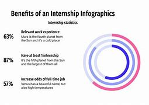

What is an Internship?
An internship is a short-term work experience offered by companies and organizations to students or beginners in a particular field to gain hands-on experience. Internships are short-term opportunities to gain entry-level work experience. Interns usually work alongside a specific team within a company, learning from seasoned professionals and trying out different aspects of the job. Rather than leading their own projects, interns usually complete smaller tasks to support larger organizational initiatives.College students and recent grads typically fill intern positions, though some are open to people already in the workforce. Internships offer a chance to gain experience in a new field before applying for a full-time position.
Advantages of Internships
- Gain practical knowledge.
- Enhance your resume.
- Networking opportunities.
- Explore career paths. While in college, you may complete class projects that simulate real-world scenarios. Though these exercises can be informative, they can’t replace hands-on workforce experience. By completing an internship, you can gain deeper insights into your career interests and how your desired industry works. Professional settings help you develop hard and soft skills. Ideally, your mentors will have several years of experience in your field and a willingness to help hone your career skills beyond the classroom.In addition to job-specific competencies, an internship teaches valuable soft skills that help you thrive in a work environment. Each office has its own culture, and adapting to a 9-to-5 job can be challenging. An internship prepares you to navigate this new dynamic. Developing communication and empathy skills can advance your career.
Companies Providing Internships
- Microsoft
- Amazon
- Tata Consultancy Services
- Infosys
Stipend Details
Internship stipends vary depending on the role and company. Typical stipends range from ₹5,000 to ₹50,000 per month in India. Whether you receive a paycheck as an intern depends on your employer. Interns aren’t considered employees under the Fair Labor Standards Act, so employers do not have to pay them. Some companies offer college credit in lieu of a wage; other internships provide both financial and academic compensation. Interns generally don’t receive job benefits like retirement contributions or health insurance.Industries like fashion and entertainment are more likely to hire unpaid interns, while other sectors, such as finance and tech, typically pay their interns. Unpaid internships can create disadvantages for people who don’t have the means to take on unpaid labor, especially in industries that require interns to temporarily relocate to expensive hubs like Los Angeles or New York City.If completing an unpaid internship isn’t feasible, reach out to your school’s career center. Some colleges offer stipend programs to supplement unpaid and low-paying internships.